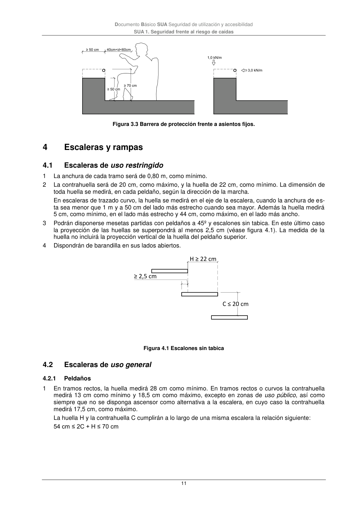

DB-SUA · 4 Escaleras y rampas · versión 2022-06-14 · capa oficial
Formatos: JSON compacto · Markdown · PDF fuente
Ámbito del documento · texto del ámbito · documento y tablas
ID técnico a0047 · PDF pág. 11 · jerarquía no validada por persona · contrastado con el literal de la página 11 (marcador PDF); no validado por persona · padre: a0036
Escaleras y rampas 4.1

PDF fuente redistribuible: copia fiel enlazada en esta página (SHA256 verificado).